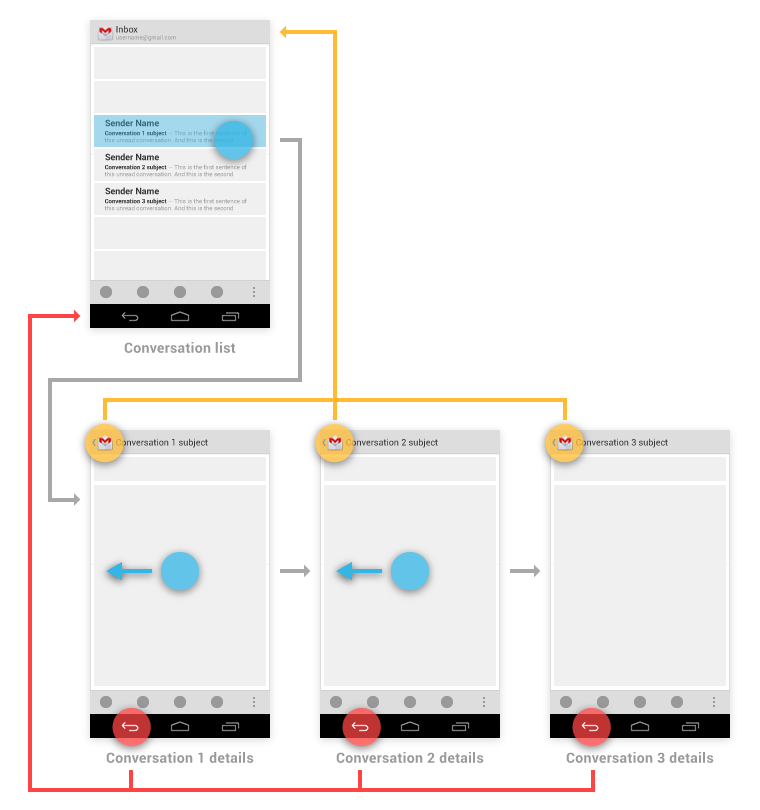
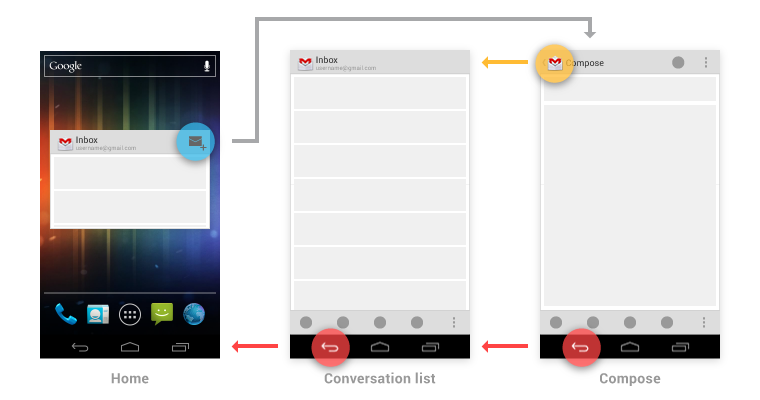

Consistent navigation is an essential component of the overall user experience. Few things frustrate users more than basic navigation that behaves in inconsistent and unexpected ways. Android 3.0 introduced significant changes to the global navigation behavior. Thoughtfully following the guidelines for Back and Up will make your app's navigation predictable and reliable for your users.
Android 2.3 and earlier relied upon the system Back button for supporting navigation within an app. With the introduction of action bars in Android 3.0, a second navigation mechanism appeared: the Up button, consisting of the app icon and a left-point caret.

Up vs. Back
The Up button is used to navigate within an application based on the hierarchical relationships between screens. For instance, if screen A displays a list of items, and selecting an item leads to screen B (which presents that item in more detail), then screen B should offer an Up button that returns to screen A.
If a screen is the topmost one in an app (i.e. the home of the app), it should not present an Up button.
The system Back key is used to navigate based on the history of screens the user has recently seen, in reverse chronological order—in effect, the temporal relationships between screens.
When the previously viewed screen is also the hierarchical parent of the current screen, pressing the Back key will have the same result as pressing an Up button -- this is a common occurrence. However, unlike the Up button, which ensures the user remains within your app, the Back key can return the user to the Home screen, or even to a different application.

The Back key also supports a few behaviors not directly tied to screen-to-screen navigation:
- Back dismisses floating windows (dialogs, popups)
- Back dismisses contextual action bars, and removes the highlight from the selected items
- Back hides the onscreen keyboard (IME)
Navigation Within Your App
Navigating to screens with multiple entry points
Sometimes a screen doesn't have a strict position within the app's hierarchy, and can be reached from multiple entry points—e.g., a settings screen which can be navigated to from any screen in your app. In this case, the Up button should choose to return to the referring screen, behaving identically to Back.
Changing view within a screen
Changing view options for a screen does not change the behavior of Up or Back: the screen is still in the same place within the app's hierarchy, and no new navigation history is created.
Examples of such view changes are:
- Switching views using tabs and/or left-and-right swipes
- Switching views using a dropdown (aka collapsed tabs)
- Filtering a list
- Sorting a list
- Changing display characteristics (e.g. zooming)
Navigating between sibling screens
When your app supports navigation from a list of items to a detail view of one of those items, it's often desirable to support direction navigation from that item to another one which precedes or follows it in the list. For example, in Gmail, it's easy to swipe left or right from a conversation to view a newer or older one in the same Inbox. Just as when changing view within a screen, such navigation does not change the behavior of Up or Back.
However, a notable exception to this occurs when browsing between "related" detail views not tied together by the referring list—for example, when browsing in the Market between apps from the same developer, or albums by the same artist. In these cases, following each link does create history, causing the Back button to step through each screen of related content which has been viewed. Up should continue to bypass these related screens and navigate to the most recently viewed container screen.

You have the ability to make the Up behavior even smarter based on your knowledge of detail view. If we extend our Market sample from above, imagine the user has navigated from the last Book viewed to the details for the Movie adaptation. In that case, Up can return to a container (Movies) which the user had not previously navigated through.

Navigation From Outside Your App
There are two categories of navigation from outside your app to screens deep within the app's hierarchy:
- App-to-app navigation, such as via intent completion.
- System-to-app navigation, such as via notifications and home screen widgets.
Gmail provides examples of each of these. For app-to-app navigation, a "Share" intent goes directly to the compose screen. For system-to-app navigation, both a new message notification and a home screen widget can bypass the Inbox screen, taking the user directly to a conversation view.
App-to-app navigation
When navigating deep into your app's hierarchy directly from another app via an intent, Back will return to the referring app.
The Up button is handled as follows: - If the destination screen is typically reached from one particular screen within your app, Up should navigate to that screen. - Otherwise, Up should navigate to the topmost ("Home") screen of your app.
For example, after choosing to share a book being viewed in Market, the user navigates directly to Gmail's compose screen. From there, Up returns to the Inbox (which happens to be both the typical referrer to compose, as well as the topmost screen of the app), while Back returns to Market.

System-to-app navigation
If your app was reached via the system mechanisms of notifications or home screen widgets, Up behaves as described for app-to-app navigation, above.
For the Back key, you should make navigation more predictably by inserting into the task's back stack the complete upward navigation path to the app's topmost screen. This way, a user who has forgotten how they entered your app can safely navigate to the app's topmost screen before exiting it.
For example, Gmail's Home screen widget has a button for diving directly to its compose screen. After following that path, the Back key first returns to the Inbox, and from there continues to Home.
